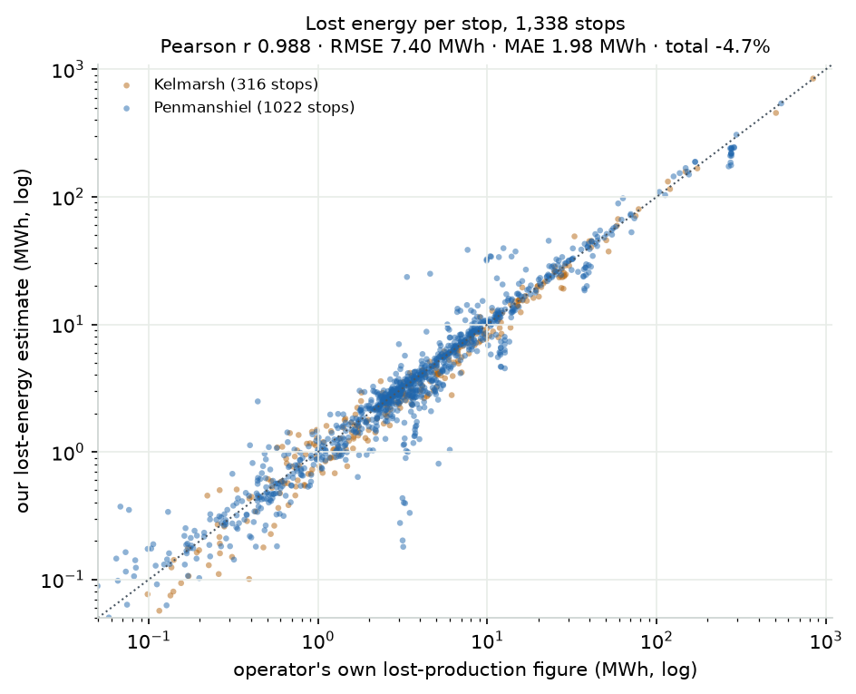
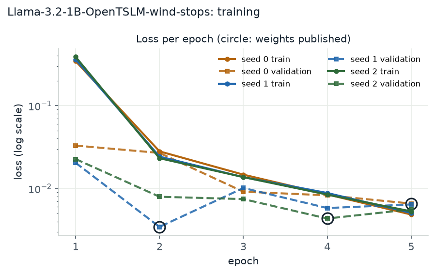
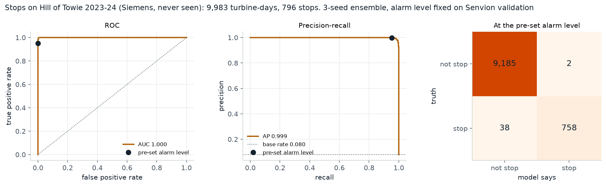
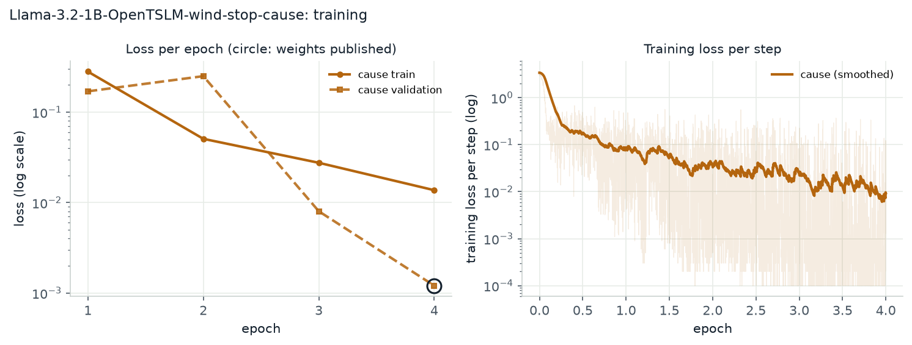
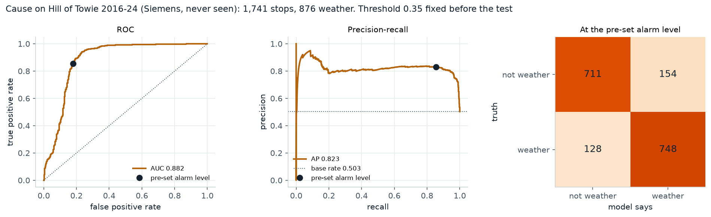
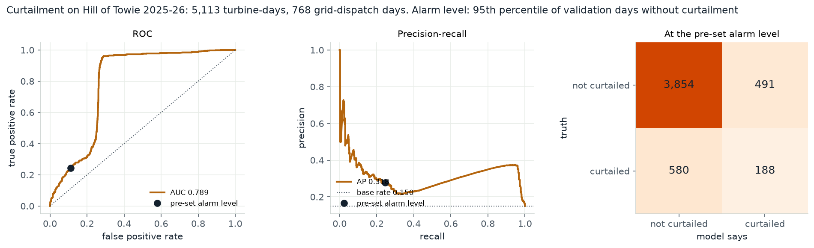
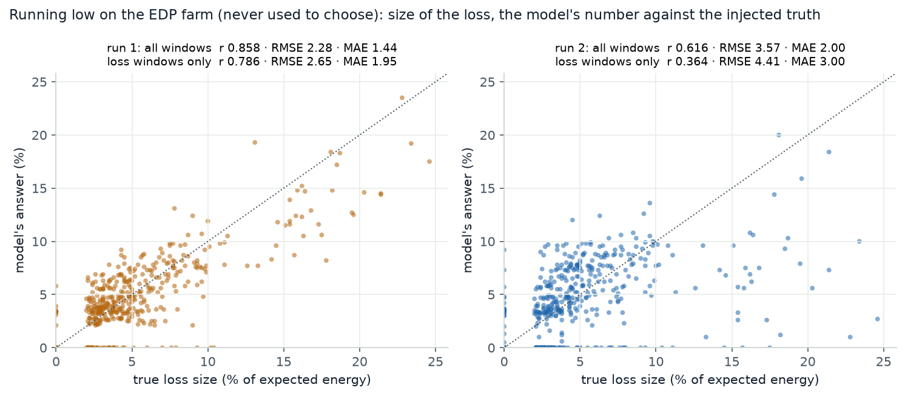
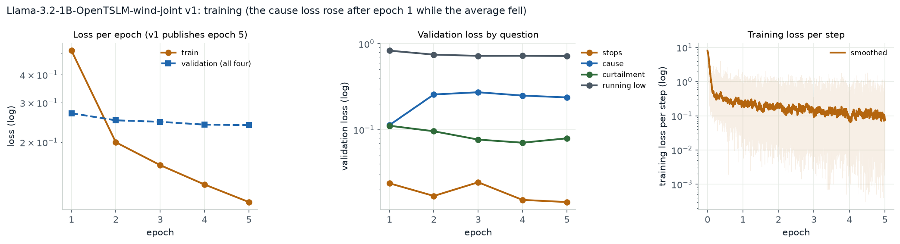

Detect · Hill of Towie
The language model’s daily stop answers, 3–9 July 2023: 20 of 25 stops caught, 0 false alarms. The 5 misses were short stops.
TimeNet Hackathon · Round 1 · sololeveling
We trained a time-series language model on one turbine maker and tested it, once, on a maker it had never seen. It caught 92% of stops where a gradient-boosting tree caught 73%. Every answer sits next to the independent evidence that checks it.
T21 made 8.2 MWh. T12 made nothing: it stood still for 840 minutes with wind of 4 m/s or more. Our model had only been trained on Senvion turbines, and it answered “stopped” for this Siemens turbine with probability 0.99999.
The problem
European onshore wind farms produce a median of about 9% less than they were financed on. Only 14% meet or beat their estimate.
Hendrickson study of European onshore projects (via WindESCo); Hammond & Simley, Wind Energy Science 2026.
Each 1% of energy recovered is worth about £3,700 per turbine per year.
2 MW turbine, 30% capacity factor, £70 per MWh.
Today’s tools find the loss and tag a cause from each maker’s own alarm codes, scored on private fleets. Nobody outside can check the answer, and it stops at that maker’s turbines.
The pitch
4:46, with the closed loop running live on real data at 3:07. German subtitles are available from the player's CC button.
A note from the presenter: I build first and pitch second. Presenting doesn't come naturally to me, and I used this hackathon to practise it, so thank you for bearing with the delivery. The substance is in the live demo and the results below, and every number there was checked before we scored it.
Click a slide or use the arrow keys. Speaker notes show the spoken script.
The demo
A replay of real turbine data with the models’ answers, each beside its independent checks. Walk the loop: the 3D farm view (detect), “Where did the energy go?” (explain), “Fix first” and the Copilot (act), “Did the fix work?” (verify) and “Real results” (learn). Without satellite imagery, the 3D view uses generated ground. The Copilot runs when the monitor is opened on claude.ai.
Detect · Hill of Towie
The language model’s daily stop answers, 3–9 July 2023: 20 of 25 stops caught, 0 false alarms. The 5 misses were short stops.
Curtailment · Hill of Towie
25–31 May 2025: 77 of 84 grid-dispatch turbine-days caught, with 4 false alarms.
Explain · Kelmarsh
88 stops in 2023, 746 MWh lost, each checked against the operator’s energy figure, comment, status codes and grid meter: 284 of 302 checks agree.
Running low · Kelmarsh
The tree caught 16 of 19 capped 30-day windows and called 0 of 17 sensor-fault windows a loss.
Act · Fix first
Turbines ranked by money at stake; the Copilot drafts the work order, and a person approves it.
Verify · Turbine 13
The real before/after series of the AeroUp blade upgrade, with both references.
Learn · Real results
Mark an answer Correct, Wrong cause or Not a problem. It stays pending until independent evidence agrees.
The monitor runs on stand-in rules until a model answers. Any model can take over, ours or yours: it sends one small JSON message per 10-minute step, and the page shows its status, explanation and confidence in place of the rules, turbine by turbine.
curl -O https://turbine-performance-engineer.vercel.app/connect/bridge.pypredict_day(). It receives one turbine-day of 10-minute rows (power, wind speed, rotor speed, pitch and nacelle direction) and returns an answer for each step it covers. It ships with a stand-in rule, so you can test the connection before your model is ready.python3 bridge.py
# 540 messages for 21 turbines
# Serving at http://localhost:8790/latestNo server? Run python3 bridge.py --out feed.jsonl, then open Model feed in the demo and load the file.
{ "schema": "windmonitor.model/1",
"farm": "towie", "time": "2023-07-09T15:30:00Z",
"model": { "name": "my-model", "version": "1" },
"turbines": {
"T12": { "status": "stopped", "cause": "turbine fault",
"confidence": 0.93,
"diagnosis": "Stopped since 13:10 at 11 m/s.",
"evidence": ["power 0 kW", "rotor 0 rpm"] } } }The status is one of normal, stopped, curtailed, low or sensor; everything else is optional. With expected_kw, the lost energy is computed from your model's own expectation. The full contract: MODEL_FEED.md.
The five trained models are on Hugging Face. Each answers one question per turbine-day from six signals: power, wind speed, rotor speed, pitch, nacelle direction and temperature. The demo rows carry the first five; the full rows come from TimeNet's Hill of Towie connector (PR #838). To show a day-level answer in the monitor, follow the comments in predict_day(): when the model says yes, answer for the steps where the turbine stood still, with its probability as the confidence.
The weights load into OpenTSLM-SP with a frozen Llama-3.2-1B. The stops and joint models also need our fusion adapter, and the prompts and data preparation aren't public. To run them, ask us in the GitHub repo.
What we built
We answer the three questions an asset manager asks, from the raw 10-minute signals, and the answers close a loop.
What is the turbine doing: stopped or curtailed?
How many megawatt-hours did each stop cost, and was it the weather or the turbine?
Fix first ranks turbines by money at stake, and the Copilot drafts the work order. A person approves it.
Did the fix work? Before and after, against two independent references.
An engineer’s verdict stays pending until independent evidence agrees. A retrained model replaces the current one only if it beats the public tests.
DATA · TIMENET PR #838
Kelmarsh (6 Senvion MM92), Penmanshiel (14 Senvion MM82) and Hill of Towie (21 Siemens SWT-2.3): 41 turbines from two makers, 10-minute SCADA, all CC BY 4.0. Every turbine-day has a labelled state, and each label was checked against an independent source.
MODEL · OPENTSLM
OpenTSLM on Llama-3.2-1B reads six raw signals: power, wind speed, rotor speed, pitch, nacelle direction and temperature. We added a fusion adapter that mixes the signals at each time step. It lifts average precision on the unseen farm from 0.90 to 0.99.
MONITOR
A 3D view of the farm with each turbine’s state, the lost energy by cause, the before/after check and a verdict button. Every verdict is saved as a label for the next round.
Results
Every test below was set before it was scored: the data, the pass bar and the alarm level. The held-back data was scored once. Tests that fell short are listed next to the ones that passed.
Trained on the two Senvion farms. The alarm level was set on Senvion validation days only, then the model was tested on the Siemens farm it never saw in training.
On the six held-back years it caught 471 more stops than gradient boosting (95% interval +378 to +576) with 3 more false alarms (0 to +8). The false-alarm part passed at its edge.
| Hill of Towie test | Turbine-days | Stops | Our model | Gradient boosting | CNN ensemble |
|---|---|---|---|---|---|
| 2016–2021, scored once | 37,899 | 2,556 | 2,341 · 8 FA | 1,870 · 5 FA | 1,982 · 5 FA |
| 2023–2024 | 9,983 | 796 | 758 · 2 FA | 638 · 2 FA | 670 · 0 FA |
FA: false alarms. Our model is the 3-seed ensemble of OpenTSLM with the fusion adapter.
A gradient-boosting detector trained without one real curtailment label, frozen, then tested against the grid operator’s dispatch records.
Our language model, first run, is on par with a tree given the same inputs, but stays below the best tree, which sees farm-wide context. It failed its pre-set bar.
| Test | Result |
|---|---|
| Hill of Towie 2025–26, 768 turbine-days on 37 dispatch dates | 96.6% caught [93.9, 98.7]; 8.1% of clean days alarmed |
| Senvion, logged curtailment (test A) | 83.8% caught |
| Senvion, later logged days | 42.5% caught. Most of those days show no drop in power; the freeze rule failed there |
| Language model, first run, Hill of Towie | 152 of 768 caught, against 504 for the best tree |
Against the operator’s own lost-energy figure over 1,338 stops: correlation 0.988, total within −4.7%. On fresh 2023–24 stops: 0.996.
The cause (weather or the turbine side) comes from a gradient-boosting tree trained on 2019–2022 stops, frozen, then tested once on 2023–24 against the operator’s comments. 312 of 313 stops are right.
| Farm, fresh 2023–24 | Stops | Lost energy | Macro F1 | Weather share error |
|---|---|---|---|---|
| Kelmarsh | 103 | 1,143 MWh | 1.000 [0.500, 1.000] | 0.0 points |
| Penmanshiel | 210 | 2,394 MWh | 0.993 [0.969, 1.000] | 3.4 points |
Bar set in advance: macro F1 of 0.8 or more and an energy-share error of 5 points or less, at both farms. Kelmarsh had only 4 weather stops, so its interval is wide.
Both models were trained on Senvion stops (2019–2024), frozen, and scored once on Hill of Towie. Nothing was trained or tuned there. The bar: the language model’s F1 at least the tree’s minus 0.05.
The language model found 748 of 876 weather stops, the tree 635. Most of the gain is icing. It leads in 8 of 9 years; 2016 is a tie. Its energy-share error was 6.7 points against the tree’s 3.1, inside the allowance.
| Hill of Towie, 2016–2024 | Our model | Tree | Difference [95%] |
|---|---|---|---|
| All 1,741 stops | 0.838 | 0.766 | +0.072 [+0.032, +0.116] |
| Stops whose label agrees with ERA5 weather | 0.910 | 0.832 | +0.078 [+0.029, +0.134] |
Guessing the most common answer scores 0.33.
Installed 24–29 September 2021. The turbine’s daily energy is compared with two independent expected-energy references, each against a baseline from before the install. The bar: both references show a gain between +1.5% and +7%, the 90% interval above 0, and no loss flag.
Both references see a gain, and 0 of 106 window-days were flagged as a loss, but the interval for reference B still includes 0.
Faults were injected into real turbine data, a digital twin, so there is a known answer; real running-low faults have no ground truth. Trained on Kelmarsh, Penmanshiel and Hill of Towie, validated on a Fuhrländer farm, tested on an EDP farm that was never used to choose.
The language model failed its validation bar twice: it found 70%, then 68%, of losses against the tree’s 92% and 97%. The tree stays the detector. The rule-based detector failed its pre-set Hill of Towie test (30-day false alarms 7.7–13.7%).
| EDP, Fuhrländer alarm level carried over | Our model | Tree |
|---|---|---|
| Real ordinary windows flagged (target 3%) | 4.5% | 18% |
| Ranking of losses (AP) | 0.995 | 0.989 |
| Cause F1, 7 classes | 0.783 | 0.779 |
| Losses found, both held to 3% of real windows | 50% | 77% |
Training and metrics
The charts from our published models. Every number was re-derived from the saved predictions and matches the results above. The weights and model cards are open on Hugging Face.








What we learned
Each one comes with the number that taught it to us.
On the farms it trained on, gradient-boosting trees match or beat it. They rank stop days slightly better (average precision 0.996 against 0.989) and win cause at Kelmarsh 2016–18 (0.918 against 0.518). On the Siemens farm the model never saw, it wins both questions. New customers bring new makers, so that is where we aim it.
For stops, an alarm level set on Senvion alone held on Siemens. For running-low faults on a new farm (EDP), our model flagged 4.5% of ordinary windows against a 3% target, and the tree flagged 18%. Held to the same 3% budget, the tree still found more losses: 77% against 50%. The calibration travelled, and the separation did not.
A plain linear classifier on the fusion adapter’s tokens is as accurate as the full model, seed by seed. Mixing the signals at the same moment is what finds the stop. The language model’s part is to put the answer into words.
The cause model failed its home test on Kelmarsh 2016–18, almost entirely in windows where pitch wasn’t recorded. They were 55% of that test and under 1% of its training. In the same run, a missing temperature was drawn as 0 °C, which looks like frost, so the model called icing. A tree handles a gap natively; a language model has to be taught it. So the next model trains with a signal dropped at random.
Our second running-low model saw “sensor fault” in 40% of its cause examples. It started calling real losses sensor faults, and found 68% of them against the tree’s 97%. Balance the answers before training, or the model learns the base rate.
We trained one model on all four questions at once. It learned them all, and curtailment even improved on the new farm: 570 of 768 grid-dispatch days caught, against 188 for its separate model, clearing the bars we set for that test (one seed). But stops and cause fell short of their pre-set bars. For the stops question, a turbine standing still in calm wind is not downtime; the shared model started counting those standstills as stops, probably because the cause question trains on stops at any wind. It also called one storm’s weather stops turbine faults. The separate models stay the answer while we fix the clashes, and we now check each question’s own score during training, because the average loss hid the problem.
We found the broken anemometers with each turbine’s second wind sensor. A run of “icing” stops at one Penmanshiel turbine was a faulty sensor, not ice. Where the evidence was clean, it agreed: stop minutes recomputed from the raw logs for 29,218 turbine-days gave 0 mismatches, and output was near zero in 82% of the slots where the grid operator instructed a cut, against 1% otherwise. A tool that learns from the log learns its mistakes.
Our curtailment detector never saw a real curtailment label, and it caught 96.6% of the days the grid cut Hill of Towie’s output. On later Senvion logged days it caught 42.5%: most of those days show no drop in power. Only the real records told us which was which.
The stops the model still misses last 60 to 90 minutes, and its false alarms are turbines idling all day at low wind. Our stop tests leave out days with a stop under 60 minutes, and we say so next to every result.
We kept six years of the Siemens farm aside, wrote the analysis and the pass rule before scoring, and scored it once with every model and threshold frozen. It passed, at the edge. Those years are now used up, so the next model needs a fresh test.
Our curtailment and running-low language models fell short of their pre-set bars. The cause model failed its home test. The first real fix check isn’t confirmed yet. Each of those results is the bar the next model has to clear.
A gradient-boosting tree trains in minutes on the same data and is often as good. We give a language model more GPU time only once it is at least as good as the tree on validation. That keeps the claim honest about where the model adds value.
Next
One model for every question: our first run trained a single model on stops, cause, curtailment and running low. It learned all four, but two questions fell short of their pre-set bars, so the separate models stay the answer while we fix the clashes (see what we learned).
Limits
Published with the results, not after them.
| Question | Limit |
|---|---|
| Stops | Gradient boosting ranks stop days slightly better (average precision 0.996 against 0.989); our edge is an alarm level that carries over to another maker. Stops under 60 minutes are not in the test. On the held-back 2016–2021 years, no model reached the 95% catch target. |
| Curtailment | 8.1% of clean days alarmed on Hill of Towie 2025–26. On later Senvion logged days, 42.5% caught. The language model stays below the best tree. |
| Cause | At home the tree is the answer: the language model scored 0.518 against 0.918 on Kelmarsh 2016–18. The unseen-maker result is one Siemens farm. Its labels come from the controller’s stop timers, whose meaning isn’t officially documented, and there is no maintenance class, so “turbine side” means faults only. Both models call about half the turbine-side stops during storms “weather”; part of that is a labelling difference. |
| Fix check | Turbine 13 is not confirmed by our bar. December’s baseline already contains October 2021, after the install, so it slightly understates the gain. |
| Running low | Tested on injected faults; real running-low faults have no ground truth. The language model failed its validation bar twice, and the rule-based detector failed its Hill of Towie test. |
Data and credits
The demo files contain excerpts and values derived from these datasets. 3D view: imagery © Esri, Maxar, Earthstar Geographics and the GIS user community; elevation from Mapzen/Tilezen terrain tiles (SRTM, NED, EU-DEM and others).
© 2026 sololeveling. All rights reserved: no licence is granted to reuse the code on this page. The trained models are open on Hugging Face; the labelling and training code are not published. The third-party data above stays under its own licence.